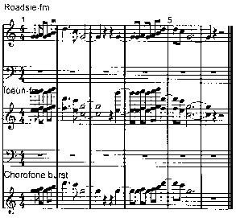

ТОРГОВАЯ МАРКА
ЧТО ТАКОЕ ТОРГОВАЯ МАРКА (ТОРГОВА МАРКА)?
Согласно Гражданскому кодексу Украины, торговая марка - (на украинском - торгова марка) - это любое обозначение или комбинация каких-то обозначений, способные отличать товары и услуги одних производителей от таких же самых или однородных товаров и услуг других производителей. Далее на сайте, во избежание путаницы в терминологии, мы просим Вас понимать, что под терминами: торгова марка, торговельна марка, товарный знак, знак для товаров и услуг, торговый знак, а также - ТМ следует понимать, что на страницах этого сайта речь идет о торговой марке. А само толкование специальной терминологии есть в нижней части этой страницы.
Как ЛЕГКО и БЫСТРО зарегистрировать торговую марку?
Позвоните 0987733353 или напишите в Telegram, Viber, или на info@tm.ua
Торговой маркой могут быть те обозначения, которые предусмотрены действующим украинским Законодательством.
а) Согласно Гражданскому кодексу Украины (Стаття 492. Торговельна марка), это:- 1. Слова, литеры, цифры (и их любые комбинации).
- 2. Изобразительные элементы (т.е. - картинки, изобразительные символы и их любые сочетания / комбинации).
- 3. Цвет и Комбинации (сочетания) цветов.
б) Далее действующий Закон Про охорону прав на знаки для товарів і послуг (сокращенно - Закон о Знаках) предусматривает (Стаття 5. Умови надання правової охорони) еще один вид знаков:
- 4. Имена собственные ( власні імена - в трактовке выше указанного Закона).
в) В свою очередь, действующие подзаконные Правила складання, подання та розгляду заявки на видачу свідоцтва України на знак для товарів і послуг предусматривают, кроме выше перечисленных, есть еще несколько видов знаков (1.4. Об'єктами правової охорони можуть бути такі знаки):
- 5. Объемные (трехмерные) знакив виде фигур или их композиций в трех измерениях (англ. - Three-Dimensional Mark)
- 6. Комбинации любых выше перечисленных символов и обозначений(это предусматривают и Кодекс, и Закон, и Правила). Часто такие обозначения называют цветовой знак.
- 7. Звуковые.
- 8. Световые.
г) Оговоримся, что в соответствии с Правилом З Инструкции (в редакции 2011 года) к действующему в Украине Сингапурскому договору (Сінгапурський договір про право товарних знаків та Правила до Сінгапурського договору про право товарних знаків із змінами від 01.11.2011) дополнительно предусмотрены следующие виды * знаков:
- 9. Голограммные знаки (англ. - Hologram Mark, укр. - голографічний знак).
- 10. Знаки движения (англ. - Motion Mark, укр. - Руховий знак). Их еще называют -
движущиеся знаки или изменяющиеся знаки, а также - анимационные знаки - 11. Мультимедийные знаки (англ. - Multimedia mark, укр. - Мультимедійний знак). Фактичеки это - те же самые движущиеся знаки, но кроме движения знак сопровождается и звуком (аудиорядом)
- 12. Позиционные (англ. - Position Mark, укр. - Позиційний знак).
д) Знаки, представляющие собой не-визуальные обозначения , но иные ** , чем звуковые (англ. - Mark Consisting of a Non-Visible Sign Other Than a Sound Mark). Под этими знаками имеются ввиду нетрадиционные невидимые знаки:
- 13. Обонятельные , т.е. знаки - запахи или ароматические знаки (англ. - Smell / olfactory marks, укр. - Нюховий знак).
- 14. Вкусовые (англ. - Taste marks, укр. - Смаковий знак).
- 15. Осязательные, еще их называют - Текстурные или Тактильные (англ. - Tactile marks, укр. - Нюховий знак).
*Заметим, что могут существовать и другие, в настоящее время еще не классифицированные знаки. Согласно Инструкции (Правил) к Сингапурскому договору предусмотрено, что возможны и другие виды нетрадиционных и не-визуальных обозначений.
** Согласно положениям Сингапурского договора "развивающиеся и наименее развитые страны" (к которым с 2006 года Укрпатент, видимо, отнесит и Украину) имеют право не регистрировать те знаки, которые Национальному ведомству этой развивающейся страны технически сложно или невозможно представить в отпечатанном виде (опубликовать типографским способом). Заявителям важно помнить, что официальая позиция Укрпатента такова, что до внесение соответствующих изменений в законодательство Украины голографическим, анимационным, позиционным, обонятельным и вкусовым знакам - не предоставляется правовая охрана в Украине. В связи с этим Заявки на такие обозначения не принимаются. Так это предусмотривают "МЕТОДИЧНІ РЕКОМЕНДАЦІЇ з окремих питань проведення експертизи заявки на знак для товарів і послуг" (это - документ Укрпатента, соращенно - Методические рекомендации УП) в п. 2.3. Дополнительно отметим, что изменяющиеся (анимированные) и позиционные ТМ в Украине часто заявляются как обычные комбинированные обозначения. Что и позволяет получить на них правовую охрану.
ВИДЫ торговых марок (товарных знаков):
СЛОВЕСНЫЕ
Словесные знаки представляют собой буквы, слова и словосочетания, типографские (шрифтовые) символы, цифры в любом их сочетании. Например, "DUROV" - это словесный знак (укр. - словесна торгова марка). Написана она оригинальным шрифтом черного цвета. Зарегистрирована нами в 2009 году для основателя сервисов VKONTAKTE и TELEGRAM Павла Дурова, Свидетельство № 102621.
Также словесным будет, например, знак "777". Этот знак зарегистрирован нами согласно Свидетельству № 94395 в 2008 году. Аналогично, словесным знаком будет и просто литера - "і" (зарегистрирована нами для сервиса i.ua) или сочетание символа "N", точки "." и цифры "1", т.е. "N.1." (Свидетельство № 196803). Эти примеры относятся к словесным ТМ и представляют собой реально зарегистрированные нами знаки наших Клиентов. Литеры словесных марок могут быть как в кириллице, так и в латинице. При этом словесные обозначения могут регистрироваться как цветными, так и черно-белыми. О том, нужен ли цвет торговой марке есть ниже на этой странице.
ИЗОБРАЗИТЕЛЬНЫЕ
Изобразительные торговые марки состоят из графических элементов, сочетания цветов или их комбинаций. Очень часто изобразительные ТМ представляют собой некий символ: надкушенное яблоко у "Apple", трилистник у товарного знака "ADIDAS" и т.п. Изобразительные символы окружают нас со всех сторон. Это три полоски ADIDAS и трехлучевая звезда Mercedes, Полковник Сандерс у KFC и неутомимый Mr. Proper, все это - изобразительные символы. На примере слева - изобразительный знак, Свидетельство № 253111, зарегистрирована нами для Клиента Агентства в 2019 году. Как видите, он представляет собой некое изображение. Заявлен он на регистрацию с указанием цвета его элементов. Таким образом, изобразительный знак может защищать не только его собственно графическую часть, но и цвет этой графической части (или - этих графических частей). При этом вопрос о том, нужно ли заявлять такие графические обозначения в цвете или можно не укзывать цвет - это вопрос непростой. Чаще всего на такой вопрос дает ответ Предварительная проверка ТМ. Именно в результатх проверки можно найти сходные знаки. А уже из анализа сходных знаков решать, надо ли применять цвет, как дополнительный элемент отличительной способности заявляемого обозначения, или нет смысла идти на дополнительные затраты.
Посмотреть примеры Изобразительных знаковЦВЕТ ИЛИ КОМБИНАЦИИ (СОЧЕТАНИЯ) ЦВЕТОВ - ЦВЕТОВОЙ ЗНАК

Эти обозначения прежставляют собой указания конкретного цвета для конкретного товара или услуги. На примере слева - международная регистрация № 734422. Это типичный пример того, как защищается один цвет. Знак зарегистрирован по Мадридской системе в 2000 году для услуг 39 класса - "Услуги экспресс-доставки; хранение товаров; перевозка людей; услуги доставки почты, включая сбор, погрузку, транспортировку, отправку, разгрузку и доставку груза, товаров, посылок, почты, документов, ценных бумаг, журналов и периодических изданий; курьерская служба; перевозка грузов". И угадайте, кто владелец? Правильный ответ - компания "TNT Holdings B.V." из Нидерландов, всемирно известная служба экспресс-доставки TNT. Соответственно и регистрация охватывала Евросоюз, страны СНГ и т.п. А еще есть знаки, состоящие уже из сочетаний цветов. Такие ТМ защищают цвета или, правильнее, сочетания различных цветов. На примере справа - международная регистрация № 732143, владелец - компании Henkel KGaA. Это уже - типичный пример того, как защищается сочетания (комбинация) нескольких цветов (Color Mark). Также цветовые знаки (защита цвета или комбинаций цветов) весьма характерны для автозаправок. Вспомните, например, зеленый цвет у заправок "BP", или желтый - у автозаправок "Шелл", а оранжевый - у "Лукойл".

Ярким примером графического объекта, который представляет собой сочетание белого и красного цвета является фирменный бело-красный прямоугольник одежды марки Hilfiger. И для одежды это сочетание белого и красного отождествляется уже с определенным брендом и производителем.
ИМЕНА СОБСТВЕННЫЕ
Эти обозначения представляют собой указание Имени, Фамилии, а иногда - и Отчества конкретного человека. Пнятно, что в части указания имени собственного - эти ТМ представляют собой обычные словесные знаки. Зачем законодатель в Законе о знаках выделил такие обозначения - остается загадкой. Пример словесного обозначения, которое представлено выше (DUROV), это - английская транслитерация фамилии основателя кроссплатформенного мессенджера Telegram - Павла Дурова, зарегистрированная нами в Украине. Заметим, что в качестве таких брендов часто заявляют и псевдонимы. Например - для артистов театра и кино, это - театральные псевдонимы. А у певцов, исполнителей и т.п., это уже - музыкальные псевдонимы. Часто бывают в нашей практике и писательские псевдонимы. Точно так же такие обозначения регистрируются для конкретного товара или услуги. На примере справа - наиболее простой вариант знака, представляющего собой имя собственное. Подыскивая типичный пример такого знака, мы решили выяснить: а кто из Президентов Украины решил увековечить свое имя собственное в бренде? Как оказалось, единственный Президент Украины, который считает свое имя собственное брендом - это Виктор Ющенко. Поэтому этот знак, зарегистрированный в Украине согласно Свидетельству № 23284, мы и представляем слева как простейший пример такого обозначения. Но заметим, что эти знаки могут быть весьма и весьма оригинальными. На примере слева - очень интересное обозначение!

Это - знак для товаров и услуг, зарегистрированный в Украине согласно Свидетельству № 210787. Это уже - пример творчества в защите своего Имени. И не только его! Этот знак защищает и ФИО Заявителя, которые есть в знаке - Митропан Сергей Николаевич. И - его номер мобильного телефона. И даже - фото владельца бренда! Браво творчеству Заявителей! Правда, что почему в знаке название города "Кременчуг" не исключено из правовой охраны (дискламация, код 526), это уже - вопрос к "творчеству" эксперта Укрпатента! :)
ОБЪЕМНЫЕ

Объемные знаки - это чаще всего или упаковка, или тара, емкость или бутылка для товаров компании. Это особая группа знаков. Объемные торговые марки чаще всего регистрируются те трехмерные, пространственно особенные объекты, по которым потребители узнают товары этого производителя. Эти знаки регистрируются в виде трехмерных фигур, обладающих индивидуальными особенностями в трех измерениях. Чаще всего такими знаками выступает упаковка товара (те же коробки) или тара (емкости для товаров). Естественно, что и регистрируются такие товарные знаки в виде композиций трехмерных фигур. И на регистрацию в заявке подаются такие знаки тоже с изображениями в трех измерениях. С нашей точки зрения, регистрация объемных ТМ имеет и некоторые недостатки в охране прав и доказывании нарушения. Напомним, что для того, чтобы защищать оригинальную форму и / или раскраску товара существует такой объект права интеллектуальной собственности как промышленный образец. Патент на промышленный образец как раз и защищает форму и раскраску. На картинке слева представлена торговая марка Европейского сообщества (European Union Trade Mark) компании "Diageo Brands B.V.". Это - бутылка всемирно известного алкогольного напитка - джина Tanqueray. Trade mark number - 005100219.
Наглядным примером того, что далеко не всегда правильно трехмерные объекты регистрировать в качестве торговой марки служит отмена регистрации в Украине международной торговой марки № 798984 (изображение конфеты "Raffaello" ). Но мало того, что отменили регистрацию, так еще бельгийская компания "Соремартек С.А." в результате этого проиграла важный для нее судебный процесс. И причина проигрыша - из-за неправильного выбора способа регистрации объекта своих прав интеллектуальной собственности.
У нас на сайте Вы можете также посмотреть примеры товарных знаков для бутылки.
КОМБИНИРОВАННЫЕ

Эти знаки могут состоять из любых сочетаний выше перечисленных знаков. Они могут, например, состоять как из слова или словосочетания и изобразительного элемента. Или, напрмер, из литер, цифр и дополнительно - включать в себя изобразительные элементы. Т.е. само название этого типа обозначений - говорит об их комбинированном составе. На примере слева - ТМ "BALKAN WATER". Это - классический комбинированный знак. Он представляет собой этикетку на бутылку напитка. Состоит это обозначение из двух частей: словесной и изобразительной. Словесная часть знака на примере - "BALKAN WATER eurodrinks bw". Также в составе этого знака есть и изобразительная часть - графические элементы. Они представляют собой стилизованное изображение гор.
Кроме того, отличительной частью этой ТМ является то, что она зарегистрирована в цвете. Первое, что бросается в глаза - это сочетание красного и синего цвета. Это - доминирующие цвета этикетки. Но там еще есть и другие цвета: голубой и белый, на которые Заявители часто не обращают внимание. А это - отдельные цвета. Таким образом эта ТМ зарегистрирована в синем, красном, голубом и белом цветах. На стоимость регистрации количество вариантов того или иного цвета никак не влияет. Влияет на стоимость регистрации ТМ то, что вообще есть какой-то цвет. При этом под цветом понимается любой цвет, кроме оттенков черного. Т.е. если в знаке 2-3-5 или 10 цветов и оттенков - он цветной (в цвете). И зарегистрировать его сразу станет дороже на размер госсборов за цвет. Итак, если в знаке есть любой цвет кроме черного, это - плюс 1000 грн госсбора при подаче Заявки. И еще плюс 200 грн госсбора дополнительно за публикацию цветного изображения знака (платится уже при выдаче Свидетельства).
В качестве комбинированных ТМ часто регистрируют логотип компании. Регистрация логотипа как торговой марки - это классический способ защитить бизнес-идентификаторы предприятия. В этом случае фиксируются права на именно то, что Потребители и Клиенты чаще всего видят на этикетке, на фирменных визитках, на вывесках и т.п.. Именно логотип - это самый важный визуально-смысловой символ этой компании. Он отличает это юрлицо от других юрлиц. И вот его лучше всего и зарегистрировать. Но при регистрации лого надо иметь ввиду, что если в нем есть визуально сильный графический символ, то возможно, что лучше будет зарегистрировать две ТМ. Одну - как комбинированную, а вторую - как изобразительную. Оговоримся, что если в логотипе присутствует и слоган (девиз) Компании, то он может быть и третьим обозначением, рекомендуемым к регистрации.
ЗВУКОВЫЕ И МЫЗЫКАЛЬНЫЕ ТОРГОВЫЕ МАРКИ
Эти нетрадиционные знаки представляют собой звуки (ангд. - Soud Mark). Звуки могут быть разные. От звука открывания зажигалки ZIPPO и рычания мотора Harley-Davidson (которому, кстати, отказали в регистрации в США), и т.п. И это все ранее упомянутое - оригинальные звуки. Они - для Его Величества Потребителя, точно так же как и другие виды знаков, отождествляют конкретный товар или услугу и конкретного их производителя. Фактически такие знаки - это аналоги звукового логотипа. Иногда их называют и другими терминами: аудио-бренд, музыкальный бренд, звуковой бренд, акустический бренд. Интересны примеры описаний, которые приводит WIPO (Всемирная организация интеллектуальной собственности) в качестве образцов описания Звуковых знаков: Пример 1: ТМ представляет собой звуки быстрых повторяющихся постукиваний деревянной палки по металлической крышке мусорного бака, которые постепенно становятся громче в течение примерно 10 секунд. Пример 2: ТМ представляет собой звуки двух шагов, сделанных коровой на асфальте, которые сопровождаются звуком мычания коровы. который и воспроизводится в записи, прилагаемой к Заявке. Но звуки же все разные, но они - могут быть и музыкой. Таким образом, музыкальные ТМ - это один из вариантов звукового знака (сокращенно - ЗЗ). И так как музыка может быть очень разной, то потому и музыкальные знаки вполне пригодны и достаточны для того, чтобы выполнять основную функцию знаков - отличать. Особенностью реалий Украины является то, что согласно статьи 12 выше упомянутого Закона о Знаках предусмотрено, что должна осуществляться публикация информации о знаке ("здійснюється публікація в офіційному бюлетені відомостей про видачу свідоцтва"). А официальный Бюллетень - бумажный. Из этого следует то, что в Украине есть возможность зарегистрировать только такой ЗЗ, который можно воспроизвести полиграфическим способом. А именно: представить его в виде музыкальных нот (записи нот на нотном стане). Что, в свою очередь, ведет к тому, что в Украине возможно зарегистрировать только музыкальные знаки (сокращенно - МузЗнак). На примере слева вверху - зарегистрированная ТМ, владелец - Публічне акціонерне товариство "Національна суспільна телерадіокомпанія України", Свидетельство № 47274. Знак зарегистрирован для услуг 35, 38 и 41 классов МКТУ (Международной классификации товаров и услуг) еще в далеком 2005 году. Как можно видеть на примере, этот МузЗнак зарегистрирован в виде нотного ряда (записи нот на нотном стане). Т может как включать слова (словесную часть звукового знака), так и быть без нее (как на примере слева). Отдельно был приложен звуковой файл. А вот ниже - мы представляем еще один музыкальный знак. Его Владелец - "Запорізька незалежна телерадіокомпанія «ТВ-5»". И этот МузЗнак уже включает в себя как звуки музыки, так и слова. Файл внизу можно прослушать. Также этот МузЗнак зарегистрирован и в виде записи нот на нотном стане. Как видно из примеров, музыкальные бренды вполне имеют право на существование.
ДВИЖУЩИЕСЯ ЗНАКИ (АНГЛ. - MOTION MARK, УКР. - РУХОВИЙ ЗНАК
Анимационные знаки, которые еще именуют как движущиеся, изменяющиеся, знаки движения - это новый вид знаков. Верхней для примера - Европейская анимационная торговая марка Castrol, Trade mark number 017492513. Для просмотра знака - надо нажать на стрелочку в нижнем левом углу. Как правило, такие обозначения относят к так называемым "нетрадиционным знакам". В Украине они появились как следствие подписания нами Сингапурского договора. Согласно этому Договору (точнее - Инструкции к нему) такие обозначения представляет собой ряд изменяющихся изображений, отражающих визуальные изменения элементов в самом знаке. Такие обозначения представляют собой знаки: а) имеющие изменения в положения его элементов и б) они используются для обозначения конкретного товара или услуги. И, кстати, и Евросоюз также не остался в стороне от этой новинки в области индивидуализации обозначений товаров и услуг. В Европейском союзе также существует возможность защищать права на Motion Mark по процедуре регистрации EUTM (European Union trade mark). По состоянию на 11.07.2020 в Евросоюзе было уже зарегистрировано 57 Motion Mark. Украина также упоминает движущиеся знаки в Методические рекомендациях УП. Согласно определению Укрпатента, такое обозначение (Руховий знак) представляет собой движущееся изображение, т.е. последовательное воспроизведение перемещения словесных и / или графических элементов знака.
При этом в этих Методических рекомендациях Укрпатент подчеркивает, что для потребителя эти изменения (движения) элементов знака должны иметь именно отличительную функцию. Т.е. отличать товары или услуги одного производителя от товаров или услуг иного производителя. Но, к сожалению, в силу того, что База ТМ Укрпатента никаким специальным образом не идентифицирует Заявки на такие обозначения, то и не позволяет из искать. Т.е., они как бы есть. Но их и как бы нет. На примере слева под Европейской ТМ - украинская регистрация движущегося знака (Свідоцтво України на знак для товарів та послуг № 268269 от 10.12.2019). Т.е., это - типичный пример того, как защищается движущийся знак в Украине: представление в Заявке последовательных кадров. Но то, что это анимационый знак - можно понять только из изучения самого знака. При этом сам Укрпатент в Методические рекомендациях указывает на то, что для знака движения в подаваемой Заявке может быть приложено несколько изображений, которые будут отображать саму динамику (движение) элементов заявляемоего обозначения. Кроме того, УП потребует письменное описание того, как обозначение меняется в движении. Также УП дополнительно потребует представить и образец движущегося обозначения, но уже - в записи на компакт-диске. Обратите внимание, что классически у Анимационного знака есть движение, но нет звука. Но есть же знаки, имеющие как движение элементов, так и звук. Это уже частный случай Анимационного знака - Мультимедийный знак. Фактически Мультимедийный знак - это сочетание звукового и движущегося знаков.
НЕТРАДИЦИОННЫЕ ТОРГОВЫЕ МАРКИ В УКРАИНЕ
По состоянию на 01.07.2020 вопрос регистрации в Украине нетрадиционных знаков регулируют "Методические рекомендации по отдельным вопросам проведения экспертизы заявки на знак для товаров и услуг" в редакции от 2014 года. И согласно п.4.7 этого документа предусмотрено, что обязательным условием надлежащей подачи Заявки на знак является одача единого изображения знака. Понятно, что это условие - невыполнимо для большей части нетрадиционных знаков. А потому, согласно п.4.7. Методических рекомендаций, Заявка на двигательный, мультимедийный, голографический, позиционный, обонятельный и вкусовой знаки будет считаться не поданной. А Заявителю, подавшему такую Заявку будет направлено письменное Уведомление о том, что его Заявка считается не поданной. Таким образом: нетрадиционные ТМ в Украине пока не регистрируются. Но! :) Выше на этой странице, описывая анимационные знаки, мы привели и пример обхода этого непродуманного желания Укрпатента не принимать такие Заявки: надо подавать последовательность кадров движущегося знака как единое его изображение.
ЧАСТЫЙ ВОПРОС: "А НУЖЕН ЛИ ЦВЕТ У ТОРГОВОЙ МАРКИ?"
Ваш знак для товаров или услуг (логотип) может подаваться на регистрацию как в цвете, так и без указания цвета, т.е. в черно-белом исполнении. Закон Украины "Об охране прав на знаки для товаров и услуг" никак не комментирует эту ситуацию: когда цвет нужен и когда не нужен. Наши специалисты занимают следующую позицию. Если знак регистрируется без указания цвета, в черно-белом исполнении, то это дает заявителю некое преимущество. Так как в этом случае считается, что цвет - не является существенным признаком у этого знака. И владелец этой ТМ может использовать ее в любом цветовом исполнении. Если же знак регистрируется в цвете, т.е. цветной, то возникает другая ситуация. Например, раз Вы зарегистрировали знак в красном цвете, то логично, что и применять его желательно в этом же цвете. Никто Вас не заставляет применять его красным. Но Вы же защитили знак все в красном! Логично и применять его так, как Вы защитили. Вывод: при подаче знака в цвете защищаться у ТМ будет именно заявленный цвет. И это - не всегда хорошо. Плюс - за подачу заявки в цвете государство возьмет дополнительные госсборы при подаче заявки и при получении Свидетельства. А надо ли тратить лишнее? Но все же дать однозначный и общий для всех случаев совет на вопрос "А нужен ли цвет у торговой марки" просто невозможно. Ответ может быть только индивидуален, ведь каждый случай в бизнесе - разный. И чтобы вообще понять, нужен ли цвет для знака, то для принятия правильного решения очень важно видеть поиск. И тогда уже знать: какие сходные ТМ заявлены в отношении тех же товаров. Потом очень важно понимать то, как владелец применяет этот знак: только на визитке? Или это - часть этикетки для шампуня? Резюмируя, мы можем Вам сказать, что самое правильное - это обсудить необходимость цвета у торговой марки с Патентным поверенным или юристами нашего Агентства.
ЧТО РЕГИСТРИРОВАТЬ?
Торговая марка, как мы уже отметили выше, может быть словом, изображением (картинкой, символом) иметь в себе комбинацию цветов, а также - содержать в себе эти элементы в любых сочетаниях. Естественно, что она может подаваться на регистрацию как в цвете, так и без указания цвета, т.е. в черно-белом исполнении. А поэтому многих наших Клиентов интересует, а что лучше регистрировать? Ответ на вопрос, что регистрировать, содержит статья на сайте. Если же поставить вопрос, что ЛУЧШЕ регистрировать, то ответ не может быть однозначным или общим для всех возможных вариантов. Чтобы порекомендовать Вам, что лучше зарегистрировать, нам надо знать ответы на такие вопросы:
- 1. Какова бизнес-задача этой регистрации?
- 2. Для чего конкретно, т.е. для каких товаров и / или услуг Вы хотите зарегистрировать именно это обозначение?
- 3. Что показала проверка торговой марки? Т.е.: какие сходные словесные, изобразительные или комбинированные обозначения выявлены? Какова степень их сходства с проверяемым? И для чего эти знаки зарегистрированы? Иногда важен и вопрос: а когда сходные знаки заявлены на регистрацию? И тогда надо думать, что и как правильно регистрировать, чтобы проблем не было у Вашей заявки.
- 4. Как Вы планируете использовать Вашу бренд? Например, только на визитке? А может и на вывеске? Или на бирке, прикрепленной к товару? Будете наносить на товар? Разместите на этикетке коробки? И здесь - надо думать, что и как правильно защищать. Мы готовы решать эти Задачи для Вас!
ТРЕБОВАНИЯ к торговым маркам:
- • Ваш знак должен быть пригоден к регистрации согласно законодательству Украины. Т.е. - подлежать регистрации в соответствии с Законом "Об охране прав на знаки для товаров и услуг". Согласно этому Закону регистрации подлежит только та знаки, которая не противоречит публичному порядку, принципам гуманности и морали и на которую не распространяются другие основания для отказа в предоставлении правовой охраны. Подробно о том, что не может быть торговой маркой - есть ниже на этой странице.
- • Ваш знак регистрируется в отношении конкретного перечня товаров и услуг в конкретных классах. Классы для регистрации ТМ (товарного знака) определяются согласно Международной классификации товаров и услуг для регистрации знаков. Эта классификация создана под эгидой Всемирной организации интеллектуальной собственности. Классы - это некие группы товаров и услуг, на которые разбиты все мыслимые и немыслимые товары и услуги. Группируются они по материалу, происхождению или области применения. Всего классов - 45. Физически классификатор - это пятитомник формата стандартного листа бумаги и с мелким шрифтом. Полный перечень самих классов для регистрации знаков на русском языке есть у нас на этом сайте. Это раздел меню "Классификация товаров и услуг для регистрации торговой марки".
- • Определение классов для регистрации знака - это задача Патентного поверенного. Классы для регистрации ТМ мы определяем исходя из содержания заполненной Вами и присланной нам АНКЕТЫ-ЗАКАЗА. Самодеятельность в определении классов для регистрации торговой марки чревата: или Вы не получите те права, на которые рассчитываете, или Ваши права на ТМ смогут обойти. Труднее Всего проходит регистрация в классах, где велико число регистраций. Это, например, класс торговли (35-й класс).
- • Торговой маркой может быть только то, что может быть опубликовано в официальном бюллетене Госслужбы интеллектуальной собственности "Промислова власність". Теоретически, действующие "Правила складання, подання та розгляду заявки на видачу свідоцтва України на знак для товарів і послуг" предусматривают, что знак может быть звуковой или световой... Но Правила тут же оговаривают, что такие знаки регистрируются Ведомством только при наличии технической возможности внесения их в Реестр и обнародования информации относительно их регистрации. Поэтому позывные радиостанции или рекламно-музыкальный ролик могут быть зарегистрированы. Но такая звуковая торговая марка может быть зарегистрирована только в виде записи нотного письма и слов ролика.
- • Заявляемый знак должен иметь различительную способность. Т.е. Ваша ТМ должна быть общеупотребимым выражением для тех товаров или услуг, в отношении которых подается на регистрацию. Нельзя, например, слово "СТОЛ" регистрировать для таких товаров, как "столы". А вот словосочетание "ЧУДО-СТОЛ" - уже можно.
- • Если у вас есть планы получить международную торговую марку или зарегистрировать товарный знак в России, то Ваш знак должна быть пригоден к дальнейшей регистрации в тех странах, куда Вы планируете его заявить. И при этом надо понимать, что требования того же Роспатента к регистрации товарного знака в России - намного более строги, чем в Украине. Например, у нас в 42-м классе зарегистрированы два знака: комбинированная ТМ со словесной частью "Patent", Свидетельство № 48312. И еще одна комбинированная ТМ со словесной частью "Patent", Свидетельство № 62675. И обе - для услуг "консультування щодо інтелектуальної власності". В России - в принципе невозможна регистрация товарного знака со словесной частью "Patent" для для услуг "консультации относительно интеллектуальной собственности" или, по крайней мере, эту словесную часть исключат из правовой охраны (дискламация).
Наши специалисты имеют большой опыт регистрации торговых марок в России, США и во многих других странах.
ПРАВА по торговой марке (Объем правовой охраны торговой марки):
Объем правовой охраны торговой марки определяется:
- • Изображением знака (т.е. самим изображением зарегистрированной ТМ)
- • Перечнем товаров и услуг, для которых ТМ зарегистрирована. Это изображение ТМ и перечень товаров и услуг вносятся в государственный Реестр торговых марок. Копия внесенного в государственный Реестр изображения ТМ отображается Свидетельстве на торговую марку отображается. Также в Свидетельстве публикуется и перечень товаров и услуг, для которых эта ТМ зарегистрирована.
ВАЖНО ПОНИМАТЬ:
- • Ваши права действуют именно на то изображение (знак), что у Вас в Свидетельстве. • Ваша торговая марка регистрируется в отношении конкретных товаров и / или конкретных услуг в конкретных классах, что тоже есть у Вас в Свидетельстве.
- • И права на Вашу ТМ действуют именно в отношении того знака, и именно в отношении тех товаров и услуг, что указанны в Свидетельстве. И Вам надо внимательно прочитать и четко понимать, какие права у вас есть, а каких нет! Например, многие интернет-проекты, не думая о правах, гоняются за доменами. Вот в результате такого недальновидного подхода часто бывает так: домен - есть, проект - есть, а вместо прав - дырка от бублика!..
ЧТО НЕ МОЖЕТ БЫТЬ ТОРГОВОЙ МАРКОЙ?
В соответствии с требованиями пункта 1 статьи 5 Закона Украины “Об охране прав на знаки для товаров и услуг” правовая охрана предоставляется знаку, который не противоречит публичному порядку, принципам гуманности и морали и на который не распространяются основания для отказа у правовой охраны, установленные данным Законом.
Кроме того, НЕ МОГУТ быть зарегистрированы, согласно законодательству, следующие торговые марки (товарные знаки, торгові марки):
1. Знаки, которые изображают или имитируют:
- • государственные гербы, флаги и другие государственные символы (эмблемы);
- • официальные названия государств;
- • эмблемы, сокращенные или полные наименования международных межправительственных организаций;
- • официальные контрольные, гарантийные и пробирные клейма, печати; награды и другие знаки отличия.
2. А также знаки, которые:
- • обычно не имеют различительной способности и не приобрели таковой вследствие их использования;
- • состоят лишь из обозначений, которые являются общеупотребительными как обозначения товаров и услуг определенного вида;
- • состоят лишь из обозначений, являющихся описательными при использовании относительно указанных в заявке товаров и услуг или в связи с ними, в частности указывают на вид, качество, состав, количество, свойства, назначение, ценность товаров и услуг, место и время изготовления или сбыта товаров или оказания услуг;
- • являются ложными или такими, которые могут ввести в заблуждение относительно товара, услуги или лица, производящего товар или оказывающего услугу;
- • состоят лишь из обозначений, которые являются общеупотребительными символами и терминами;
- • отображают лишь форму, обусловленную естественным состоянием товара либо необходимостью получения технического результата, или который придает товару существенную ценность.
3. Знаки, которые являются тождественными или схожими настолько, что их можно спутать:
- • со знаками, ранее зарегистрированными или заявленными на регистрацию в Украина на имя другого лица для таких же или родственных с ними товаров и услуг;
- • со знаками других лиц, если эти знаки охраняются без регистрации на основании международных договоров, участником которых является Украина, в частности знаками, признанными хорошо известными в соответствии со статьей 6 bis Парижской конвенции по охране промышленной собственности;
- • с фирменными наименованиями, известными в Украине и принадлежащими другим лицам, получившими право на них до даты подачи заявки относительно таких же или родственных с ними товаров и услуг;
- • квалифицированными указаниями происхождения товаров (в том числе спиртов и алкогольных напитков), охраняемых согласно Закон Украины "Об охране прав на указание происхождения товаров".
- • знаками соответствия (сертификационными знаками), зарегистрированными в Украине в установленном порядке.
4. Не регистрируются в качестве ТМ знаки, воспроизводящие:
- • промышленные образцы, права на которые принадлежат в Украине другим лицам;
- • названия известных в Украине произведений науки, литературы и искусства или цитаты и персонажи из них, произведения искусства и их фрагменты без согласия владельцев авторского права или их правопреемников;
- • фамилии, имена, псевдонимы и производные от них, портреты и факсимиле известных в Украине лиц без их согласия.
СКОЛЬКО можно иметь торговых марок?
Количество Ваших торговых марок - НЕ ОГРАНИЧЕНО. Что для физического, что для юридического лица. Сколько надо - столько и регистрируйте. Вы можете обладать целой серией торговых марок, что сделает ваш бизнес более эффективным. В Украине есть множество фирм и частных лиц, имеющих далеко не одну зарегистрированную торговую марку. По состоянию на 14.07.2010 года согласно базе данных Укрпатента можно привести следующую любопытную информацию:
Компания "Пищевые продукты Мультимикс" имеет целых 793 зарегистрированные торговые марки.
Черняк Евгений Александрович (это владелец ХОРТИЦЫ) имеет целых 596 зарегистрированных торговых марок;
Компания KODAK имеет в Украине 145 международных торговых марок;
Пинкус Михаил Олегович имеет 116 зарегистрированных торговых марок;
Богатов Олег Иванович имеет 111 зарегистрированных торговых марок;
Компания "Укртелеком" имеет 103 зарегистрированные торговые марки;
• Заказать регистрацию торговой маркиТерминология
- ТОРГОВА МАРКА (укр.). Это разговорное украино-язычное словосочетание. В Украине согласно Гражданскому кодексу имеется термин ТОРГОВЕЛЬНА МАРКА (именно так на украинском языке). Но он совершенно неестественен для обычной украинской речи. Поэтому часто украино-язычные заявители говорят именно "торгова марка". Замечу, что специалистам нашего Агентства этот термин тоже кажется более естественным. Соответственно и "реєстрація торгової марки" - это более естественное украино-язычное выражение, чем то, что написано в Гражданском кодексе.
- ТОРГОВАЯ МАРКА. От английского "trade mark". Это - общепринятый в мире термин - зарегистрированное (или поданное на регистрацию) в установленном порядке обозначение (знак). В украинском Законодательстве термин ТОРГОВЕЛЬНА МАРКА (именно так на украинском языке) впервые появится в Украине с 2004-го года согласно новому Гражданскому кодексу. По сравнению с термином ТОВАРНЫЙ ЗНАК - это наиболее правильное и емкое выражение. В силу исторических и языковых причин, это выражение употребляется в Украине более часто. Еще в русском и украинском употребляют и синонимы: товарный знак или товарний знак, торговый знак, товарная марка или товарна марка. Но это - все одно и тоже.
- БРЕНД. Это - не юридический термин. Это - отождествляемый с неким словом тот устойчивый образ, имидж и репутация самой компании, или ее конкретных товаров / услуг в сознании ее потребителей. Термином бренд обозначается уже широко известное обозначение. В настоящее время этот термин в как в СМИ, так и среди части потребителей используется очень часто. С точки зрения Патентных поверенных и юристов, понятия «бренд» и «регистрация бренда» - это не юридические термины. А скорее - термины, используемые специалистами в рекламе или маркетинге. Т.е. если вы будете говорить, что вам нужна регистрация бренда, то мы Вас поймем.
- ЛОГОТИП. В классической трактовке ( от греч. "Logos" - слово и "Typos" - отпечаток) - оригинальное начертание, графическо - символьное изображение. Передающее названия фирмы или ее товаров (услуг). Логотип, как правило, специально разрабатывается с целью индивидуализации и привлечения визуального внимания. Регистрация логотипа - это то же самое, что и регистрация ТМ.
- ЗНАК ОБСЛУЖИВАНИЯ. Российский термин для обозначения обозначения, зарегистрированного для услуг. Это - название или условное обозначение услуг фирмы или предпринимателя, выполненное в определенной графической манере. Термин знак обслуживания и в России не особо прижился, кстати.
- ЗНАК ДЛЯ ТОВАРОВ И УСЛУГ (укр. - ЗНАК ДЛЯ ТОВАРІВ І ПОСЛУГ). Закон Украины говорит: "Знак - позначення, за яким товари і послуги одних осіб відрізняються від однорідних товарів і послуг інших осіб". Собственно говоря, термин "знак для товаров и услуг" - это пока юридически правильный термин из Закона "Об охране прав на знаки для товаров и услуг" (далее - Закон). Соответственно, и "регистрация знака для товаров и услуг" - тоже весьма верное выражение.
- TM - общепринятая в мире аббревиатура. Представляет собой сокращение от английского "trademark". Как правило, символ ™ проставляется рядом с той торговой маркой (логотипом), которая пока только подана на регистрацию, но еще не зарегистрирована в соответствии с национальным законодательством. В Украине этот предупредительный символ не предусмотрен Законом. Поэтому у нас в стране законодательной регламентации применения или размещения ™ - просто не существует. Но, как правило, его ставят возле поданного на регистрацию знака в конце такого знака, немного выше и правее.
- ® - это предупредительная маркировка (именно так в Законе - "попереджувальне маркування"), т.е. предупредительный символ зарегистрированного обозначения. Представляет собой первую литеру (латинскую R) от английского слова "Registered", т.е. "Зарегистрировано". Проставляется рядом с уже зарегистрированной ТМ. Как правило, этот символ ставится в конце зарегистрированного знака и немного правее и выше его.
- © - первая литера от английского слова "Copyright" (копирайт или в переводе - авторское право). Применяется для обозначения имущественных авторских прав. Согласно Закону владелец имущественных авторских прав имеет право применять этот специальный символ для указания своих прав. Закон "Об авторском праве и смежных правах" предусматривает следующий порядок написания символа авторского права (копирайта): в начале - латинская литера С в кружочке, далее - имя владельца прав, а уже потом - год первой публикации этого объекта авторского права.
- (Р) - символ охраны смежных прав на фонограммы. Предусмотрен ст. 11 Международной Конвенции "Об охране прав исполнителей, производителей фонограмм и вещательных организаций". На украинском - Міжнародна конвенція про охорону інтересів виконавців, виробників фонограм і організацій мовлення". Согласно Конвенции производитель фонограммы для обозначения своих прав может на упаковке разместить надпись, состоящую из знака P, за которым следует указание года первой публикации. Также на упаковке обязательно должно быть наименование производителя этой фонограммы, которому принадлежат имущественные права на эту фонограмму. Конвенция предусматривает и защиту прав исполнителей: если на упаковке не указаны основные исполнители, то предупредительная надпись должна также включать имя лица, обладающего правами этих исполнителей.
Гонорар Патентного поверенного за подготовку, подачу и сопровождение заявки - 1.500 грн.
Регистрация ТМ